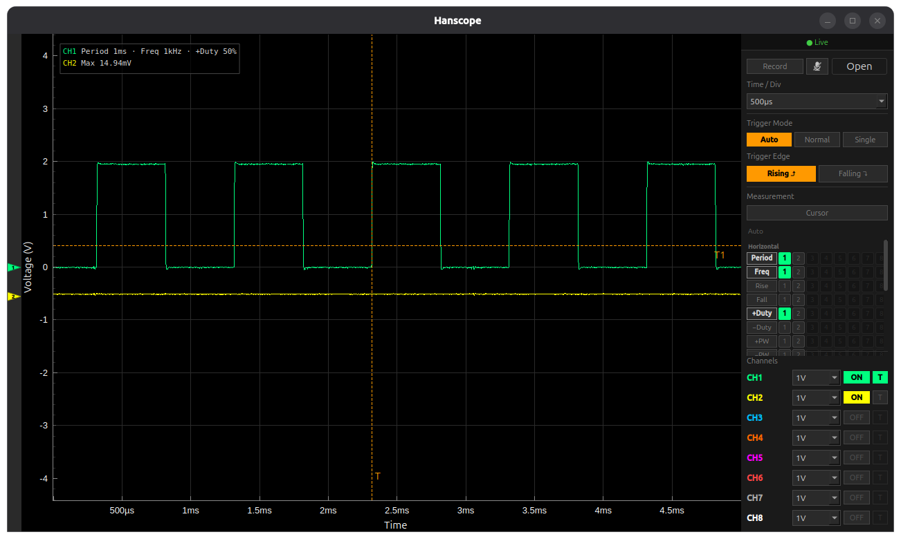

An open-source oscilloscope UI for the Hantek 1008C USB scope on Linux. The vendor software is Windows-only.

8 channels, per-channel V/div, hardware trigger (auto / normal / single, rising or falling),
roll mode, measurements, and .hsrec session recording with optional mic voice notes.
Python ≥ 3.10. Clone the repo, pip install -r requirements.txt, run python3 main.py.
A udev rule is required so the USB device is usable without root — see the
README.